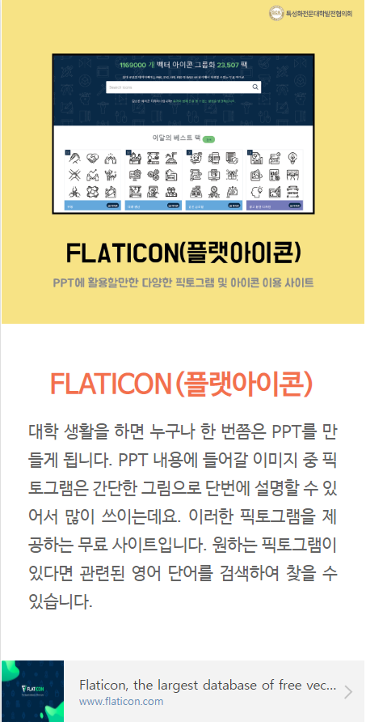

/<!DOCTYPE html>
<html>
<head>
<meta  charset = " UTF-8 " >
<title>추천사이트1 플랫아이콘</title>
<style>
	body {background-color: green ; }
	h3 {font-size: 40px;
		text-align: center;
		color : blue; }
	hr { border: 9px solid black; }
	p {color:blue;
		font-size: 30px;}
	span {font-size: 30px;}
</style>
</head>
<body>
	<h3>플랫아이콘</h3>
	<hr>
	<span>대학 생활을 하면 누구나 한 번쯤은 PPT를 만들게 됩니다. PPT 내용에 들어갈 이미지 중 픽토그램은 간단한 그림으로 단번에 설명할 수 있어서 많이 쓰이는데요. 이러한 픽토그램을 제공하는 무료 사이트입니다. 원하는 픽토그램이 있다면 관련된 영어 단어를 검색하여 찾을 수 있습니다.</span><br><br><p>

<ul>
<li><a href="https://www.flaticon.com/">플랫아이콘</a></li>

</body>
</html>
